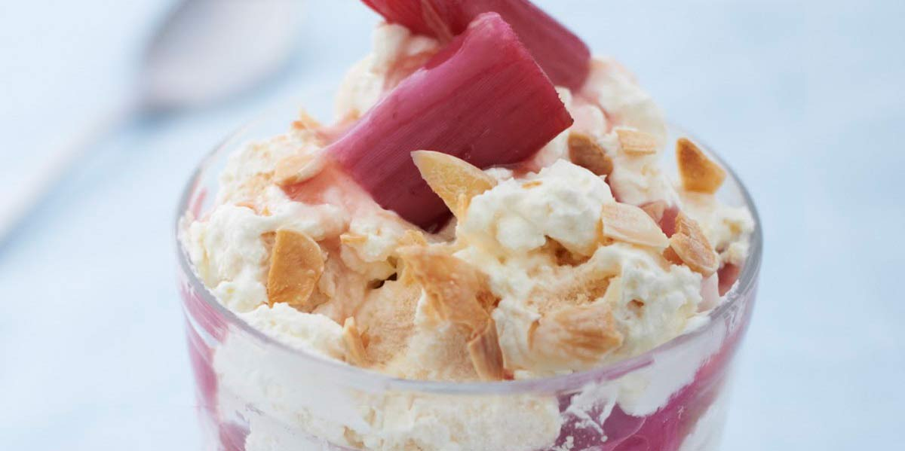

Eton Mess
Recipe Specification
Ingredients List
| Ingredients | Quantity |
|---|---|
| Caster Sugar | 175g |
| Large Eggs | 3x1 |
| Strawberries | 500g |
| Icing Sugar | 20g |
| Double Cream | 500ml |
Yield: 5 portions
Preparation
- Separate egg whites from yolk.
- Wipe a mixing bowl with a kitchen towel and a drop of white wine vinegar.
- Add whites to bowl and use an electric whisk to whisk them so that they leave soft peaks.
- Gradually add caster sugar a tablespoon at a time whilst whisking. Once all of the caster sugar is combined, whisk for a further 4 minutes so that mixture is glossy and smooth to touch.
- Line 2 baking trays with grease proof paper.
- Pre-heat oven to 150’C.
- Transfer meringue mixture to piping bag and pipe blobs on to the baking trays. Pipe each blob to an inch in diameter and leave a 1 inch perimeter around each blob.
- Remove hull from strawberries and cut in half.
- Place Strawberries in a food processor and sift in icing sugar. Blend until smooth.
- use an electric whisk to add volume to the double cream. Whisk until cream produces a medium peak.
Cooking Instructions
- Reduce the temperature of the oven to 140’C and place trays of meringue in the oven for an hour. Turn off oven and leave meringue in for 2 hours to dry out.
- Place meringues with a dollop of cream and a spoon of strawberry puree.

Serving Suggestions
Serve with jelly.
Storing instructions
Cover with clingfilm and place in the fridge. Consume with 4 days of making.